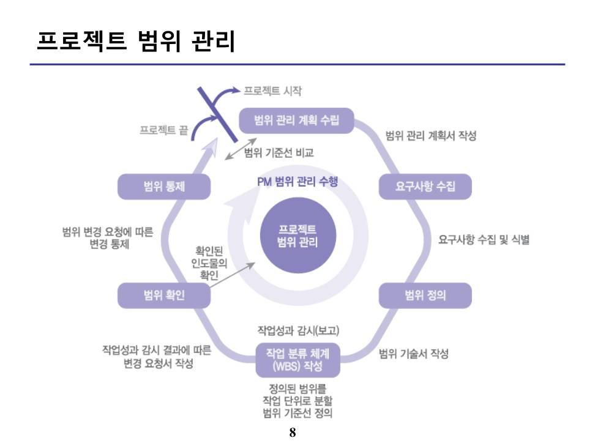
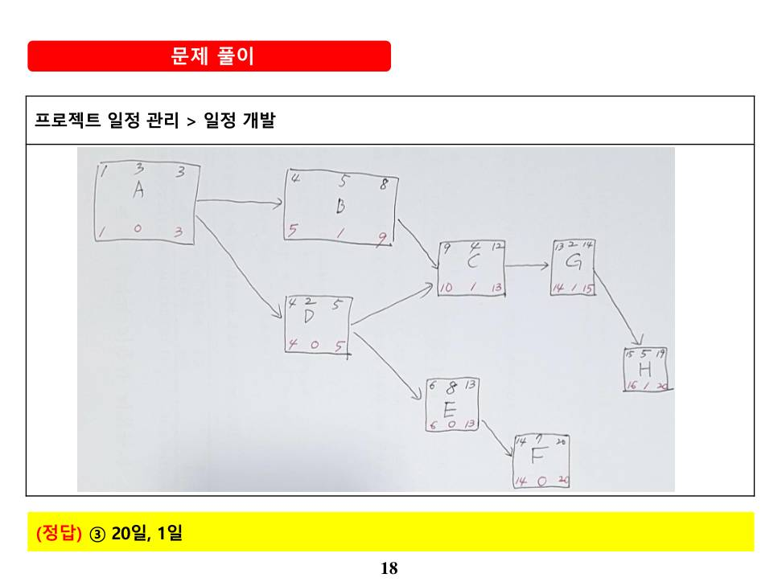
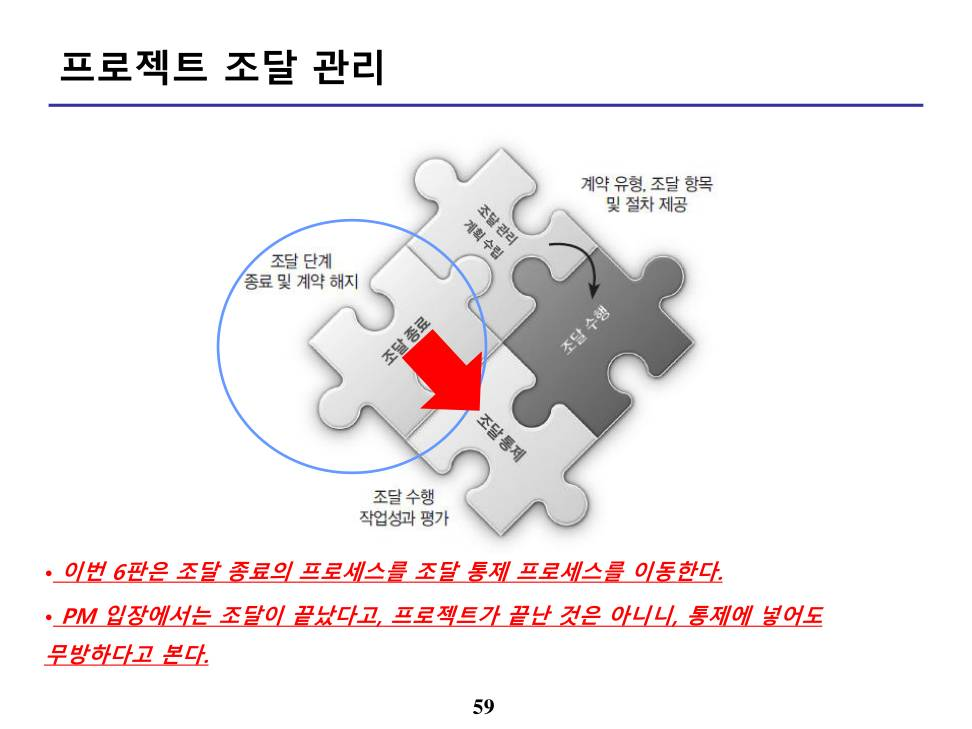
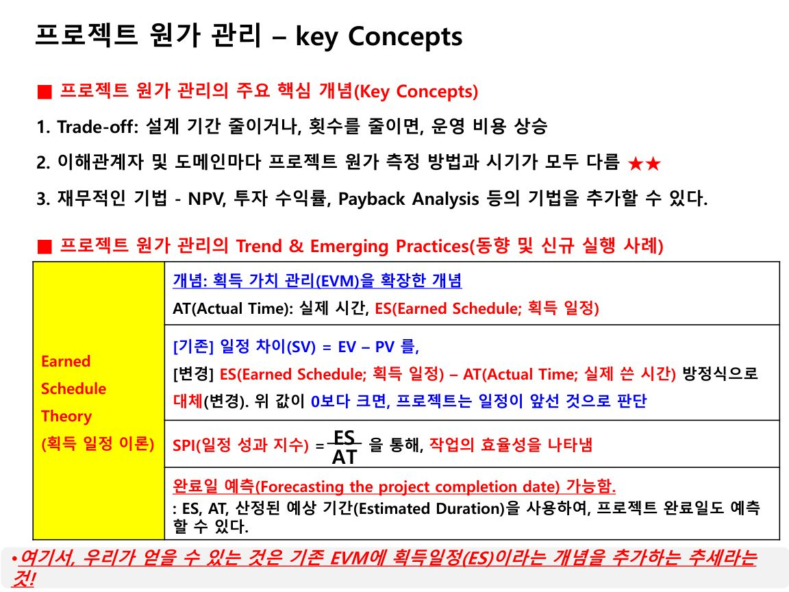
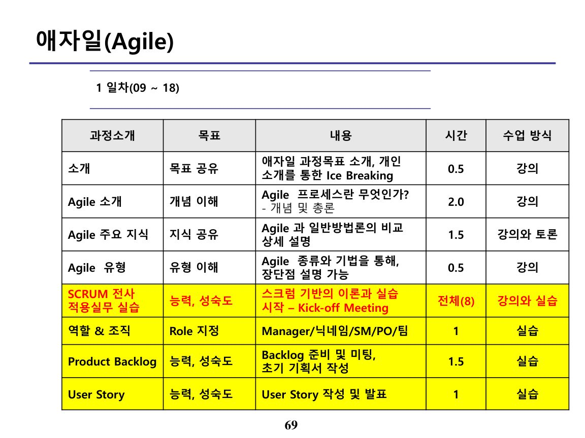

1. 특강 개요
본 특강은 프로젝트 관리 10개 지식영역을 ITO(Input-Tool-Output) 관점으로 정리하고, 계산형 최빈출인 획득가치관리(EVM)와 애자일을 집중 정리한다. (각 지식영역의 상세는 M07·M09~M12 참조)
▸ 원본 p.4 표 복원: 프로젝트 헌장 개발(Develop Project Charter) ITO
| 입력물(Input) | 도구 및 기법(Tool & Technique) | 산출물(Output) |
|---|---|---|
| 1.비즈니스 문서(Business Documents) 1.1 비즈니스 케이스 (Business Case) 1.2 편익 관리 계획서 (Benefit Management Plan) 2. 협약서(Agreements) 3. 기업환경요인 (Enterprise Environmental Factors) 4. 조직 프로세스 자산 (Organizational Process Assets) 1. 첫 프로세스의 ITO 인데 잘 ITO 개념이 잘 이해 되세요? 2. 빨간색 부분은 자주 출제되는 용어이니, 암기하세요. 3. 이 ITO 외에 기업에서는 더 많은 것들이 있습니다. 이론과 현실의 차이입니다. BP입니다. | 1. 전문가 판단(Expert judgment) 2. 자료 수집(Data Gathering) 2.1 브레인스토밍 2.2 핵심전문가 그룹(Focus group) 2.3 인터뷰 3. 대인관계 및 팀 기술 (Interpersonal and team skills) 3.1 갈등관리(Conflict Management) 3.2 촉진기법(Facilitation technique) 3.3 미팅관리(Meeting Management) 4. 미팅(Meeting) | 1. 프로젝트 헌장(Project Charter) 2. 가정사항 로그(Assumption Log) Reminder! |
▸ 원본 p.11 표 복원: 요구사항 수집(Collect Requirements)
| 입력물(Input) | 도구 및 기법(Tool & Technique)★ | 산출물(Output) |
|---|---|---|
| 1. 프로젝트 헌장 (Project charter) 2. 프로젝트 관리계획서 2.1 범위관리계획서 (Scope Management Plan) 2.2 요구사항 관리계획서 (Requirements Management Plan) 2.3 이해관계자 관리계획서 (Stakeholder Management Plan) 3. 프로젝트 문서 3.1 가정 로그(Assumption Log) 3.2 교훈물 등록대장 3.2 이해관계자 관리 대장★ (Stakeholder Register) 4. 비즈니스 문서(Business Documents) 4.1 비즈니스케이스(Business Case) 5. 협약서(Agreement) 6. EEF 7. OPA | 1. 전문가판단 2. 데이터 수집(Data Gathering) 2.1 브레인스토밍 2.2 인터뷰(Interview) 2.3 핵심전문가 그룹(Focus Group) 2.4 설문지 및 설문조사 (Questionnaires and Surveys) 2.5 벤치마킹(Benchmarking) 3. 데이터 분석(Data Analysis) 3.1 문서분석 4. 의사결정 4.1 투표 4.2 다기준 의사결정 분석 (Multicriteria Decision Analysis) 5. 데이터 표현 5.1 친화도(Affinity diagram) 5.2 마인드 매핑(Mind Mapping) 6. 개인상호작용과 팀 스킬 6.1 명목 집단 기법 (Nominal Group technique) 6.2 관찰(Observations) 6.3 촉진(Facilitation) 7. 컨텍스트 다이어그램 (Context Diagrams) 8. 프로토타입(Prototypes) | 1. 요구사항 문서★ (Requirement Documentation) 2. 요구사항 추적 매트릭스(표) (Requirement Traceability Matrix) ★★ RT |
▸ 원본 p.12 표 복원: 범위 정의
| 입력물(Input) | 도구 및 기법(Tool & Technique) | 산출물(Output) |
|---|---|---|
| 1. 프로젝트 헌장(Project Charter) 2. 프로젝트관리 계획서 2.1 범위관리계획서 (Scope Management Plan) 3. 프로젝트 문서 3.1 가정사항 로그 3.2 요구사항 문서 (Requirement Documentation) 3.3 위험관리대장 4. EEF 5. 조직 프로세스 자산(OPA) | 1.전문가 판단(Expert judgment) 2. 데이터 분석 2.1 대안 분석 (Alternatives Analysis) 3. 의사 결정 3.1 다기준 결정 분석 4. 대인관계 및 팀 기술 (Interpersonal and team skills) 4.1 촉진(Facilitation) 5. 제품 분석★ (Product Analysis) | 1. 프로젝트 범위 기술서★★★ (Project Scope Statement) 2. 프로젝트 문서 갱신 (Project Document Updates) 2.1 가정사항 로그 2.2 요구사항 문서(화) 2.3 요구사항 추적표 2.4 이해관계자 관리대장 |
▸ 원본 p.21 표 복원: 원가 통제(Control Costs)
| 입력물(Input) | 도구 및 기법(Tool & Technique) | 산출물(Output) |
|---|---|---|
| 1. 프로젝트 관리 계획서 (Project management plan) 1.1 원가 관리 계획서 1.2 원가 기준선 1.3 성과 측정 기준선 2. 프로젝트 문서 2.1 교훈물 3. 프로젝트 자금 요구사항 (Project funding Requirements) 4. 작업 성과 데이터 (Work performance data) 5. 조직 프로세스 자산(OPA) | 1. 전문가 판단 2. 데이터 분석 2.1 획득 가치 분석★ (Earned Value Analysis) 2.2 차이 분석 2.3 추세 분석 2.4 예비비 분석(Reserve analysis) 3. 완료성과지수(TCPI: To-complete performance index) 4. 프로젝트 관리 정보 시스템 (PMIS) | 1. 작업 성과 정보 (Work performance Information) 2. 원가 예측(치)(Cost Forecasts) 3. 변경 요청(Change requests) 4. 프로젝트 관리 계획서 갱신 (Project management plan Updates) 4.1 원가 관리 계획서 4.2 원가 기준선 4.3 성과 측정 기준선 5. 프로젝트 문서 갱신 (Project documents updates) 5.1 가정사항 로그(Assumption Log) 5.2 산정 근거 5.3 원가 산정 5.4 교훈물 관리대장 5.5 위험 관리대장 |
▸ 원본 p.43 표 복원: 팀 관리(Manage Team)
| 입력물(Input) | 도구 및 기법(Tool & Technique) | 산출물(Output) |
|---|---|---|
| 1. 프로젝트 관리 계획서 1.1자원 관리 계획서 (Resource Management Plan) 2. 프로젝트 문서 2.1 이슈 로그(Issue Log) 2.2 교훈물 관리대장 2.3 프로젝트 팀 배정(표) (Project Team Assignments) 2.4 팀 헌장 3. 작업 성과 보고서 (Work Performance Reports) 4. 팀 성과 평가치 (Team Performance Assessments) ★★ 5. EEF 6. 조직 프로세스 자산(OPA) | 1. 대인관계 및 팀 기술 (Interpersonal and team skills) 1.1 갈등관리(Conflict Management) ★★ 1.2 의사 결정(Decision Making) 1.3 감성 지능(Emotional Intelligence) 1.4 영향력(Influencing) 1.5 리더십(Leadership) 2. PMIS | 1. 변경 요청 (Change Requests) 2. 프로젝트 관리 계획서 갱신 (Project Management Plan Updates) 2.1 자원 관리 계획서 (Resource Management Plan) 2.2 일정 기준선 2.3 원가 기준선 3. 프로젝트 문서 갱신 (Project Documents Updates) 3.1 이슈 로그(Issue Log) 3.2 교훈물 관리대장 3.3 프로젝트 팀 배정 (Project Team Assignments) 4. 기업 환경 요인 갱신 (EEF Updates) |
▸ 원본 p.46 표 복원: 의사소통 관리
| 입력물(Input) | 도구 및 기법(Tool & Technique) | 산출물(Output) |
|---|---|---|
| 1. 프로젝트 관리 계획서 (Project Management Plan) 1.1 자원관리 계획서 1.2 의사소통 관리 계획서 (Communications Management Plan)★★★ 1.3 이해관계자 참여 계획서 2. 프로젝트 문서 1.1 변경사항 로그 1.2 이슈 로그 1.3 교훈물 관리대장 1.4 품질 보고서 1.5 위험 보고서 1.6 이해관계자 관리대장 3. 작업 성과 보고서 (Work Performance Reports) 4. 기업 환경 요인 (Enterprise Environmental Factors) 5. 조직 프로세스 자산 (Organizational Process Assets) | 1. 의사소통 기술 (Communication Technology) 2. 의사소통 방법 (Communication Methods) 3. 의사소통 기술(Skills) 3.1 의사소통 역량(Competence) 3.2 피드백(Feedback) 3.3 비언어적 기술(Nonverbal) 3.4 발표(Presentation) 4. 프로젝트 관리 정보 시스템 (Project Management Information Systems) 5. 프로젝트 보고(Project Reporting) 6. 대인관계 및 팀 기술 6.1 적극적인 경청 6.2 갈등 관리 6.3 문화적 인식 6.4 미팅 관리 6.4 네트워킹 6.5 정치적 인식 7. 미팅 | 1. 프로젝트 의사소통 (Project Communications) 2. 프로젝트 관리 계획서 갱신 (Project Management Plan Updates) 2.1 의사소통 관리 계획서 (Communications Management Plan) 2.2 이해관계자 참여 계획서 3. 프로젝트 문서 갱신 (Project Documents Updates) 1.1 이슈 로그 1.2 교훈물 관리대장 1.3 프로젝트 일정 1.4 위험 보고서 1.5 이해관계자 관리대장 4. 조직 프로세스 자산 갱신 (Organizational Process Assets Updates) |
▸ 원본 p.63 표 복원: 원가 산정(Estimate Costs ITO)
| 입력물(Input) | 도구 및 기법(Tool & Technique) | 산출물(Output) |
|---|---|---|
| 1. 프로젝트 관리 계획서 (Project management Plan) 1.1 원가 관리 계획서 (Cost Management plan) 1.2 품질관리 계획서 1.3 범위 기준선 2. 프로젝트 문서 2.1 교훈물 관리대장 2.2 프로젝트 일정(Project Schedule) 2.3 자원 요구사항 2.4 위험 관리대장 3. 기업환경요인(EEF) 4. 조직 프로세스 자산(OPA) | 1.전문가 판단(Expert Judgment) 2.유사산정(Analogous estimating) 3.모수 산정(Parametric estimating) 4.상향식 산정(Bottom-up esti mating) 5. 3점 산정(Three-point estimating) 6. 데이터 분석 6.1 대안 분석 6.2 예비비 분석(Reserve analysis) 6.3 품질 비용(Cost of quality) 7. PMIS 8. 의사 결정(Decision Making) 8.1 투표(Voting) | 1. 원가 산정★ (Cost Estimates) 2. 산정 근거(Basis of estimates) ★ 3. 프로젝트 문서 갱신 (Project documents updates) 3.1 가정사항 로그 3.2 교훈물 관리대장 3.3 위험 관리대장 |
▸ 원본 p.67 표 복원: 이해관계자 식별
| 입력물(Input) | 도구 및 기법(Tool & Technique) | 산출물(Output) |
|---|---|---|
| 1. Project charter(프로젝트 헌장) 2. 비즈니스 문서 2.1 비즈니스 케이스 2.2 편익 관리 계획서 3. 프로젝트 관리계획서 3.1 의사소통관리 계획서 3.2 이해관계자 참여 계획서 4. 프로젝트 문서 4.1 변경사항 로그 4.2 이슈 로그 4.3 요구사항 문서 5. 협약서(Agreements) 6. 기업 환경 요인(EEF) 7. 조직 프로세스 자산(OPA) | 1. 전문가 판단(Expert judgment) 2. 데이터 수집(Data Gathering) 2.1 설문지 및 설문조사 (Questionnaires and Surveys) 2.2 브레인스토밍 (Brainstorming) 3. 데이터 분석(Data Analysis) 3.1 이해관계자 분석 (Stakeholder analysis) 3.2 문서 분석 4. 데이터 표현(Data Representation) 4.1 이해관계자 매핑/표현 (Stakeholder Mapping/Representation) 5. 미팅(Meetings) | 1. 이해관계자 관리대장 (Stakeholder register) ★★★ 2. 변경 요청(CR) 3. 프로젝트 관리 계획서 갱신 3.1 요구사항 관리 계획서 3.2 의사소통 관리 계획서 3.3 위험관리 계획서 3.4 이해관계자 참여 계획서 4. 프로젝트 문서 갱신 4.1 가정사항 로그 4.2 이슈 로그 4.3 위험 관리대장 |



2. ITO(입력·도구·산출물) 이해
모든 프로세스는 입력물 → 도구·기법 → 산출물 구조를 가진다. 대표로 프로젝트 헌장 개발(4.1)의 ITO는 다음과 같다.
| 입력물(Input) | 도구·기법(T&T) | 산출물(Output) |
|---|---|---|
| 비즈니스 문서(비즈니스 케이스·편익관리 계획서), 협약서, 기업환경요인(EEF), 조직 프로세스 자산(OPA) | 전문가 판단, 자료수집(브레인스토밍·인터뷰·핵심전문가그룹), 대인관계·팀 기술(갈등관리·촉진·미팅관리), 미팅 | 프로젝트 헌장, 가정사항 로그(Assumption Log) |
3. 프로세스 순서 · 핵심 산출물
각 지식영역의 프로세스는 정해진 수행 순서와 핵심 산출물을 가진다. 순서를 뒤바꾼 보기가 자주 출제되므로 대표 순서·산출물을 익힌다.
| 지식영역(대표 프로세스) | 핵심 산출물 |
|---|---|
| 범위 – 요구사항 수집 → 범위 정의 | 요구사항 문서, 요구사항 추적 매트릭스(RTM), 프로젝트 범위 기술서 |
| 범위 – WBS 작성 | 범위 기준선(Scope Baseline = WBS + WBS사전 + 범위기술서) |
| 일정 – 활동정의·순서배열·기간산정·일정개발 | 일정 기준선(CPM·주공정) |
| 품질 – 품질관리 계획 → 품질 관리 → 품질 통제 | 품질보고서·검사 결과 |
4. 획득가치관리(EVM) 계산 ★★★

| 기본 값 | 의미 |
|---|---|
| PV(계획가치) | 계획된 작업의 예산(Planned Value) |
| EV(획득가치) | 실제 완료된 작업의 예산가치(Earned Value) |
| AC(실제원가) | 실제 투입 비용(Actual Cost) |
| BAC(완료시점예산) | Budget At Completion |
ETC = EAC − AC | VAC = BAC − EAC
- SPI·CPI > 1 = 일정 앞섬 / 원가 절감(양호), < 1 = 지연 / 초과(불량).
- SV·CV > 0 양호, < 0 불량.
- EAC 공식은 상황별로 다르다: 현재 편차가 일시적이면 AC+(BAC−EV), 지속되면 BAC/CPI, 일정·원가 모두 반영 시 AC+(BAC−EV)/(CPI×SPI).
5. 산정 기법
산정 기법은 원가·기간을 추정하는 방법으로, 일반적으로 정확도와 속도(비용)가 상충한다(정확도: 상향식>모수>유사).
| 기법 | 내용 |
|---|---|
| 유사 산정(Analogous) | 과거 유사 프로젝트의 실제 값을 기준으로 추정하는 하향식(Top-down) 기법. 전문가 판단·이력정보 활용, 정보 부족한 초기에 사용. 빠르지만 정확도 낮음 |
| 모수 산정(Parametric) | 이력자료의 통계적·수학적 관계(모수)를 이용(단위당 비용×물량). 예) 코드 1KLOC당 비용, 면적당 단가. 데이터 신뢰도 높을수록 정확 |
| 상향식 산정(Bottom-up) | WBS 최하위(작업패키지)별로 산정 후 상위로 합산. 가장 정확하나 시간·비용·노력↑. FFP 등 정밀 산정에 적합 |
| 3점 산정(Three-point) | 불확실성 반영해 낙관(O)·최빈(M)·비관(P) 3값 추정. 베타분포 (O + 4M + P)/6, 삼각분포 (O+M+P)/3, 표준편차 (P−O)/6 |
6. 애자일(Agile) ★★★
애자일은 짧은 반복(Iteration/Sprint)과 지속적 피드백으로 변화에 신속 대응하는 적응형 방법론이다. 대표적으로 스크럼(SCRUM)이 있다.

스크럼(SCRUM) 3-3-5 ★★
| 역할(3) | 산출물(3) | 이벤트(5) |
|---|---|---|
| PO(Product Owner) SM(Scrum Master) 개발팀(Dev Team) | Product Backlog Sprint Backlog Increment(제품 증분) | Sprint Sprint Planning Daily Scrum Sprint Review Sprint Retrospective |
- PO: 제품 백로그 우선순위 관리(비즈니스 가치). SM: 스크럼 프로세스 촉진·장애 제거(관리자 아님). 개발팀: 자기조직화.
- 번다운 차트(Burndown): 남은 작업량을 시간에 따라 표시(감소 추세).
- 애자일 선언 4대 가치: 개인·상호작용 > 프로세스·도구 / 작동 SW > 문서 / 고객 협력 > 계약 협상 / 변화 대응 > 계획 준수.
📚 전체 기출·예상문제 (16문항) — 원문 수록
본 강좌 원본 PDF에 수록된 기출·예상문제를 빠짐없이 원문 그대로 정리했습니다. 정답·해설은 강의 원문 기준입니다.